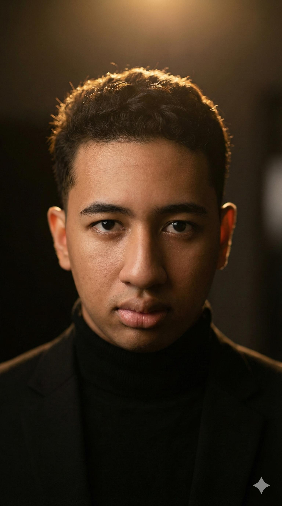

🚀 Network Engineer & Web Developer
Solusi Digital Stabil & Aman.
Siswa TKJ yang berfokus pada infrastruktur jaringan, konfigurasi server, dan pengembangan web modern.

Keahlian Utama
Networking
Routing & Switching, Subnetting.
Mikrotik
MTCNA Level, Hotspot, Bandwidth Management.
Web Dev
HTML5, CSS3, Tailwind, Basic JavaScript.
Portofolio Proyek

Topologi Jaringan Kantor
Desain jaringan 3 lantai dengan keamanan VLAN terpisah antar divisi menggunakan Cisco Packet Tracer.
Lihat Detail →
Debian Web Server
Konfigurasi Apache2, Bind9 DNS, dan MariaDB pada Debian 11 Server mode CLI.
Lihat Detail →
Mikrotik Hotspot
Implementasi Login Page voucher dan limitasi bandwidth user untuk Pelanggan.
Lihat Detail →